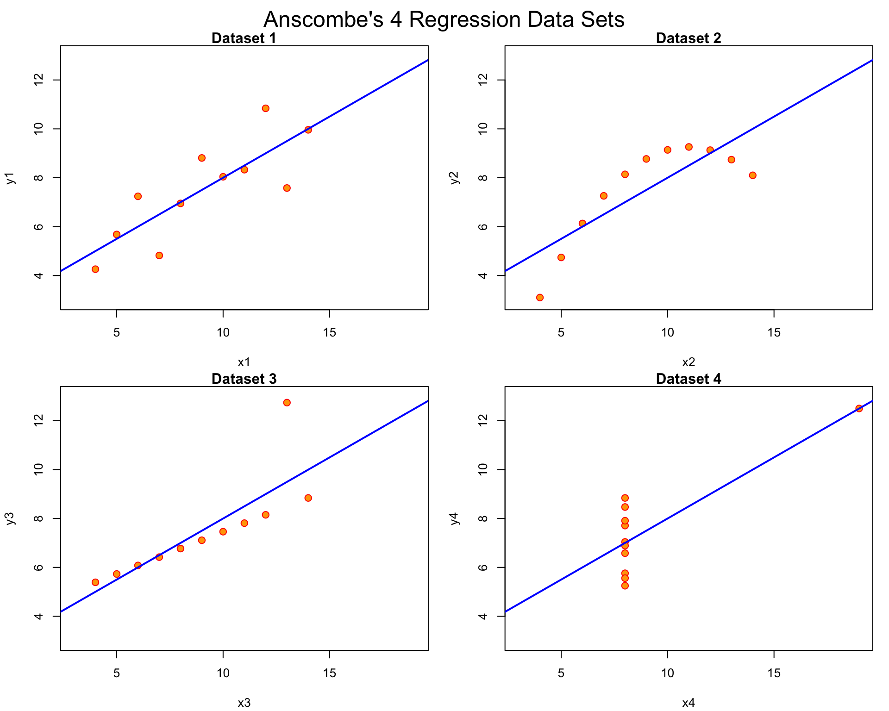

Anscombe’s Quartet teaches us that data can look the same in numbers but tell very different stories when you make a graph. All four datasets have the same averages, correlations, and regression lines, but the plots show one is a straight line, another is curved, and others are shaped by outliers.
The problem: If we only look at numbers, we may miss these hidden patterns and make wrong conclusions.
The solution: Always graph the data before and after running models. Simple plots like scatterplots can reveal issues like outliers, non-linear trends, or unusual points.
Loading and Exploring the Data
Building Linear Models
Visualizing the Four Datasets
# Set up plotting layoutop <-par(mfrow =c(2, 2), mar =0.1+c(4,4,1,1), oma =c(0, 0, 2, 0))# Plot all four datasets with regression linesfor(i in1:4) { ff[2:3] <-lapply(paste0(c("y","x"), i), as.name)plot(ff, data = anscombe, col ="red", pch =21, bg ="orange", cex =1.2,xlim =c(3, 19), ylim =c(3, 13),main =paste("Dataset", i))abline(mods[[i]], col ="blue", lwd =2)}mtext("Anscombe's 4 Regression Data Sets", outer =TRUE, cex =1.5)

Anscombe’s Quartet: Four datasets with identical summary statistics but very different patterns
par(op)
Key Insights
The visualization reveals four very different relationships:
Dataset 1: Perfect linear relationship
Dataset 2: Clear non-linear (curved) relationship
Dataset 3: Linear relationship with one outlier
Dataset 4: No relationship except for one influential point
Despite these dramatic differences, all four datasets have: - Same mean for x and y - Same correlation coefficient - Same regression line - Same R-squared value
This demonstrates why visualization is essential for understanding data patterns that summary statistics alone cannot reveal.
2. Changing Color in Fall Script
[This section will be completed in the next iteration]
3. Critique of Plot Design (Nathan Yau Principles)
[This section will be completed in the next iteration]